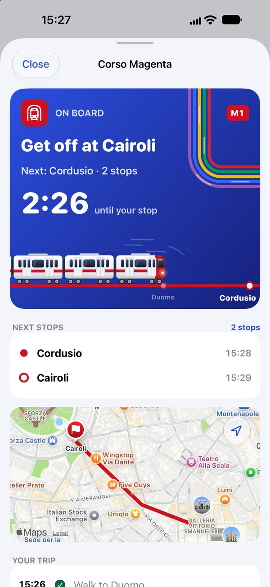
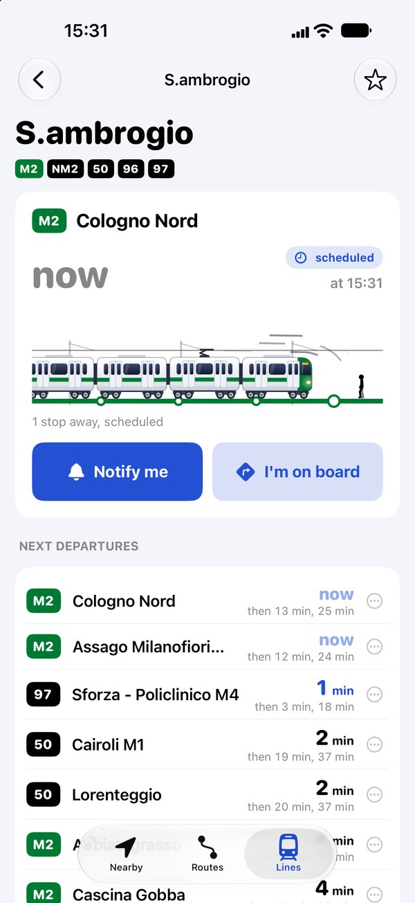
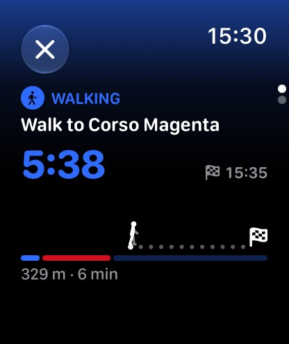

LineaMI
Muoviti meglio.
Move better.
Metro, tram, bus e treni Trenord di Milano in un'app: cosa passa vicino a te, quando uscire e come arrivare, passo dopo passo. Gratis, senza account e senza pubblicità.
Milan's metro, trams, buses and Trenord trains in one app: what's coming near you, when to leave and how to get there, step by step. Free, no account, no ads.
Novità della 1.1New in 1.1
Il tuo viaggio, dal vivo.
Your trip, live.
Durante il viaggio vedi il tuo mezzo che corre sulla sua linea: la metro con il numero giusto di carrozze, il treno a due piani, il tram, il bus. E te che cammini, aspetti in banchina e sali. Un passo scorre nell'altro, senza stacchi, anche al polso.
During your trip you see your vehicle running along its line: the metro with the right number of cars, the double-decker train, the tram, the bus. And yourself walking, waiting on the platform and getting on. Each step flows into the next, on your wrist too.



FunzioniFeatures
Tutto quello che serve per muoversi.
Everything you need to get around.
Gli orari ufficiali di tutta la rete stanno sul telefono: LineaMI risponde subito, anche in metro senza campo.
The official timetables for the whole network live on your phone, so LineaMI answers instantly, even underground with no signal.
Vicino a te
Near you
Le fermate intorno a te con i prossimi passaggi, appena apri l'app.
The stops around you and their next departures, as soon as you open the app.
Guida passo passo
Step-by-step guidance
Quando uscire, dove salire, quando scendere, col tuo mezzo che corre sulla linea. Sulla Dynamic Island, sulla schermata di blocco e al polso.
When to leave, where to board, when to get off, with your vehicle running along its line. On the Dynamic Island, the Lock Screen and your wrist.
Treni Trenord
Trenord trains
Passante, linee S, Malpensa Express e regionali, nei percorsi, nelle fermate e nella lista delle linee.
The Passante, S lines, Malpensa Express and regional trains, in routes, stops and the line list.
BikeMi
Bici normali, elettriche e posti liberi in tempo reale. Nei percorsi trovi anche l'opzione bici, da stazione a stazione.
Regular bikes, e-bikes and free docks, live. Routes also show a bike option, dock to dock.
Apple Watch
Il viaggio, i passaggi vicini e la complicazione sul quadrante, senza tirare fuori il telefono.
Your trip, nearby departures and a watch-face complication, without reaching for your phone.
Quando esco
When to leave
Un widget ti dice quando uscire per Casa o Lavoro, "Arriva entro le…" ti dice quando partire, e c'è l'avviso prima dell'ultima corsa.
A widget tells you when to leave for Home or Work, "Arrive by…" tells you when to set off, and you're warned before the last ride.
Giorni di sciopero
Strike days
LineaMI conosce le fasce garantite di ATM e Trenord, mette prima i percorsi con corse garantite e, se vuoi, ti avvisa la sera prima.
LineaMI knows ATM and Trenord guaranteed hours, lists routes with guaranteed rides first and, if you like, reminds you the evening before.
Senza gradini
Step-free
Percorsi che evitano le fermate segnalate come non accessibili.
Routes that avoid stops marked as not accessible.
Mappa della metro
Metro map
Le cinque linee, il Passante e le linee S in una mappa che si aggiorna da sola quando la rete cambia.
The five lines, the Passante and S lines on a map that updates itself when the network changes.
Orari completi
Full timetables
Tutti i passaggi di una fermata per la giornata, e i percorsi salvati come "Casa → Palestra", in un tocco.
Every departure at a stop for the day, and saved routes like "Home → Gym", one tap away.
Siri e Comandi
Siri and Shortcuts
"Portami a casa", "Dove vuoi andare?", "Bici libere vicino a casa": con la voce, il tasto Azione, il Centro di Controllo o Spotlight.
"Take me home", "Where to?", "Bikes near home": with your voice, the Action button, Control Center or Spotlight.
Per chi visita Milano
For visitors
Come arrivare a Linate, Malpensa (anche col Malpensa Express) e Bergamo, in italiano, inglese, francese, spagnolo, tedesco e cinese.
How to reach Linate, Malpensa (Malpensa Express included) and Bergamo, in Italian, English, French, Spanish, German and Chinese.
FAQ
Domande frequenti
Frequently asked questions
Gli orari sono in tempo reale?
No. LineaMI usa gli orari programmati pubblicati dal Comune di Milano (ATM) e da Regione Lombardia (Trenord). Durante un viaggio guarda dove ti trovi col GPS e, se il mezzo è in ritardo, sposta le tappe successive. Deviazioni e scioperi possono comunque cambiare i passaggi.
Che zona copre?
Milano e i comuni serviti da metro, tram e bus, più i treni Trenord dell'area milanese: Passante, linee S, Malpensa Express e regionali fino a Malpensa. Quando la rete cresce LineaMI si aggiorna da sola.
Funziona senza connessione?
Sì: fermate, passaggi e percorsi vengono calcolati sul telefono. Servono internet solo la ricerca degli indirizzi, il percorso a piedi sulla mappa e l'aggiornamento degli orari.
Come funziona nei giorni di sciopero?
LineaMI legge l'elenco pubblico degli scioperi del Ministero. Quel giorno ti dice le fasce garantite di ATM e Trenord e nei percorsi mette prima quelli con corse garantite. Se attivi l'avviso, alle 20 del giorno prima ti dice chi sciopera. Controlla comunque gli avvisi ufficiali: le adesioni cambiano.
Posso prendere una bici BikeMi con LineaMI?
LineaMI ti mostra bici normali, elettriche e posti liberi nelle stazioni vicine, in tempo reale. Per sbloccare la bici serve l'app ufficiale BikeMi. Se non ti interessa, puoi nascondere BikeMi nelle impostazioni.
Posso comprare i biglietti?
No, LineaMI non vende biglietti. Spiega dove comprarli e rimanda all'app ufficiale ATM.
Come funziona l'Apple Watch?
Apri LineaMI una volta sull'iPhone con il Watch vicino: il Watch riceve una copia degli orari e da lì calcola i passaggi da solo, con il suo GPS. Per la complicazione, tieni premuto il quadrante, tocca Modifica e scegli LineaMI.
I percorsi "senza gradini" sono affidabili?
Usano i dati di accessibilità pubblicati con gli orari. Ascensori e scale mobili possono essere fuori servizio: controlla sempre sul posto.
LineaMI è di ATM?
No. LineaMI è un'app indipendente, non affiliata ad ATM, Trenord, BikeMi né al Comune di Milano.
Are times live?
No. LineaMI uses the scheduled timetables published by the City of Milan (ATM) and the Lombardy Region (Trenord). During a trip it checks where you are with GPS and, if your ride is late, shifts the next steps. Diversions and strikes can still change departures.
What area does it cover?
Milan and the towns served by metro, tram and bus, plus Trenord trains around Milan: the Passante, S lines, Malpensa Express and regional trains up to Malpensa. When the network grows, LineaMI updates itself.
Does it work offline?
Yes: stops, departures and routes are computed on the phone. You only need the internet for address search, the walking route on the map and timetable updates.
What happens on strike days?
LineaMI reads the Ministry's public list of strikes. On the day it shows ATM and Trenord guaranteed hours and lists routes with guaranteed rides first. If you turn on the reminder, at 8 pm the day before it tells you who is striking. Always check official notices too: turnout varies.
Can I take a BikeMi bike with LineaMI?
LineaMI shows regular bikes, e-bikes and free docks at nearby stations, live. To unlock a bike you need the official BikeMi app. If you don't need it, you can hide BikeMi in Settings.
Can I buy tickets?
No, LineaMI doesn't sell tickets. It explains where to buy them and links to the official ATM app.
How does the Apple Watch app work?
Open LineaMI once on your iPhone with the Watch nearby: the Watch receives a copy of the timetables and from then on works out departures by itself, with its own GPS. For the complication, touch and hold the watch face, tap Edit and choose LineaMI.
Are step-free routes reliable?
They use the accessibility data published with the timetables. Lifts and escalators can be out of service, so always check on site.
Is LineaMI made by ATM?
No. LineaMI is an independent app, not affiliated with ATM, Trenord, BikeMi or the City of Milan.
SupportoSupport
Serve una mano?
Need a hand?
Scrivimi per problemi, idee o un orario che non torna. Rispondo io, di solito entro un paio di giorni.
Write to me about problems, ideas or a timetable that looks wrong. I answer personally, usually within a couple of days.